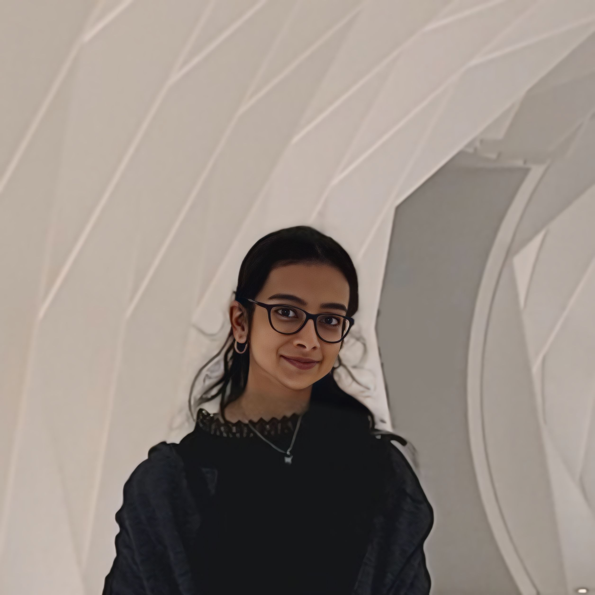
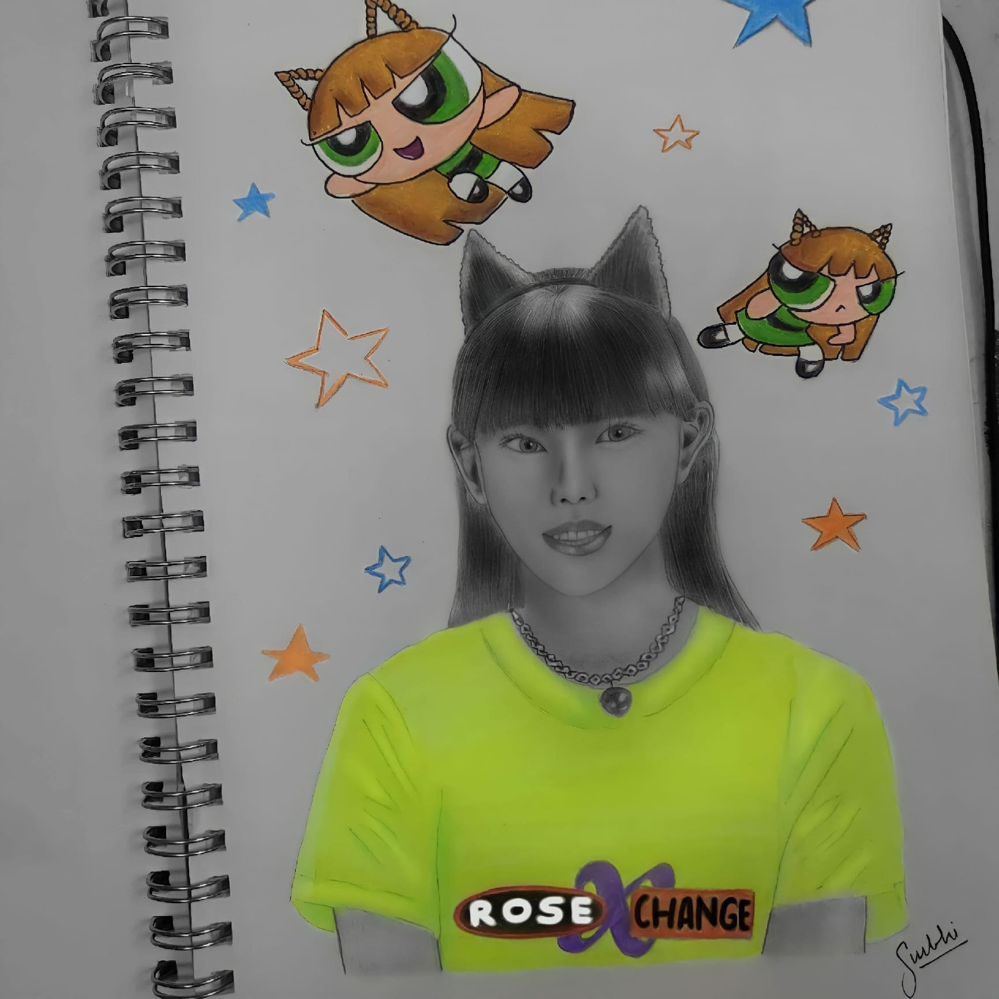

Hi, I’m Surbhi.
I build with
data & AI.
A Data Science student building useful applications across machine learning, Generative AI, computer vision, and analytics.
Ideas, put to work.
From noisy images to meaningful insights.
A selection of things I’ve built.

THE PERSON BEHIND THE PROJECTS
Analytical mind.
Creative instinct.
I enjoy the space where data, technology, and design meet. My projects span machine learning, statistical analysis, dashboards, and applications—each a chance to turn a question into something useful.
I’m pursuing B.Tech in Data Science at NMIMS MPSTME. I like understanding the problem first, exploring the evidence, and building something people can actually use.
Tools for the question.
The problem shapes the approach.
A different kind of line.
When I’m away from code, I draw.
Same curiosity. A different medium.

Let’s work
together.
I’d love to hear about opportunities in data science, analytics, and building useful applications.
surbhi1us@gmail.com